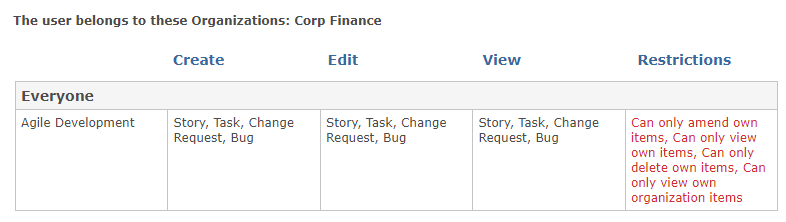
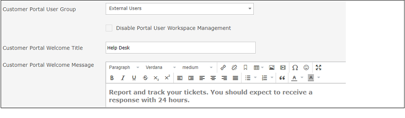

Membership of the Gemini Administrator User Group gives access the Gemini site's admin section, nothing else. For members of this group to see projects then they must be in the "Can View Project" role on that project's permission set. If Gemini Administrators are in the "Can Only View Own Items" role, they will only see items they create or items where they are the assigned resource. Etc.
Gemini applies the most restrictive permission from all the User Groups a person is in. Run the Report for a user on the User Maintenance screen. The most restricted role they have on any given project is the one that will apply.
"Everyone" is a system group, like "Gemini Administrators" and "Everyone Authenticated". Unlike Gemini Administrators you don't get to designate who is in Everyone, the group is exactly what is says it is. The difference between Everyone and Everyone Authenticated is that the latter refers only to people who log in, but since very few customers allow anonymous browsing of their Gemini sites, the two are equivalent."
For consistency. Gemini secures everything - fields, functionality, projects, workflow. You may not be aware of it but if you add a field to a screen, save it, and go back and look at the User Groups associated with it, you will see that because you didn't specify User Groups with access to that field, Gemini added "Everyone" to it. There is therefore no such thing as an unsecured field or workflow, and only one logic path to determine who has access.
Portal users are members of a group that is defined on the "People...Options" tab of the admin section. These users have a different login welcome message, can only see the Grid View, and they are either in "Can Only View Own Items" or "Can Only View Own Organization Items" roles on a project.
You have to create an Organization for your customer and define the users that are its members. Normal members of the company will be in a User Group associated with "Can Only View Own Items", but the user(s) who should see all the tickets for the organization should be in a separate User Group that is associated with the role "Can Only View Own Organization Items". This latter role 'grants access to the items for all the members of an organization.
Yes, if the user has no records associated with them. No, if they have records associated with them. Gemini will not let you 'break' connections and data integrity but you can disable the user. Disabled users are not included in your license count.
Gemini caches data for performance, and users and roles are cached. You may have to wait for the cache to refresh, or you can force it by having the App Pool in IIS recycled.
There are a number of possible reasons